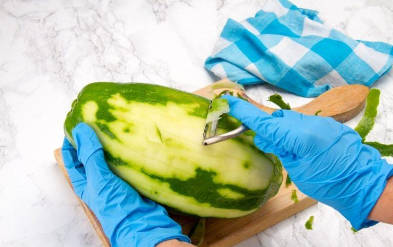

Ingredientes
- Lechosa Verde 1 Kg
- Agua 6 tazas
- Bicarbonato de Sodio 1 cda
- Papelon 750 gr
- Azucar 250 gr
- Agua 7 tazas
- Clavos de Olor 10 unidades
Procedimiento
- Hacer cortes en la lechosa para que bote la leche
- Pelar la lchosa, eliminar semillas y cortar en rebanadas delgadas
- En una olla grande poner a hervir las rebanadas de lechosa y agregar
el bicarbonato de sodio, dejar hervir a fuego alto durante 3 minutos - Luego cambiamos el agua con la que se hirvio, se enjuaga con agua fria
y reservamos - En una olla grande se ponen a hervir la 7 tazas de agua con el papelón,
el azucar, y los clavos de olor - Cocinar hasta que el almibar espece, aproximadamente 1 hora y 30 minutos
- En la misma olla del almibar a fuego bajo agregamos las rebanadas de
lechosa que reservamos y cocinamos a fuego bajo por 1 hora aproximadamene - Luego sacamos los clavos de olor, dejamos reposar y se refrigera, por ultimo
servimos y disfrutamos

